GPlan - Sistema Gerador em Excel
Gaurabda Planner - GPlan, baseado no Gaurabda Calendar (GCal) da ISKCON - Sociedade International da Consciência de Krishna.
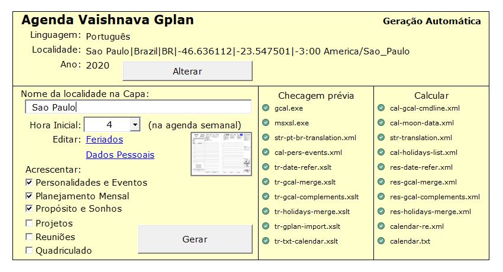A GPlan é uma planilha eletrônica em formato Excel® capaz de gerar seu Planner em pdf com o calendário vaishnava calculado para sua localidade (e também com os seus dados pessoais), para você personalizar e imprimir como quiser.
Toda automatizada com macros em VBA, você não precisa saber Excel nem saber operar o GCal: é só selecionar os dados do Planner e apertar uns botões, e em poucos minutos o pdf do seu Planner estará pronto.
Com a GPlan é possível criar planners personalizados com as seguintes características:
- Visão semanal;
- Visão mensal;
- Calendários do ano atual e do próximo;
- Calendários do mês atual e do próximo em cada visão semanal;
- Dados pessoais completos;
- Encontrando sua razão de ser;
- Identidade, propósito, método, visão e valores;
- Alcançando meu sonho;
- Análise de forças, fraquezas, ameaças e oportunidades;
- Planejamento anual;
- Revisão mensal com resolução de problemas, roda da vida e priorização de tarefas para o mês seguinte;
- Espaço para anotações diversas;
- Lista de contatos;
- Citações do Bhagavad-gita e outros textos védicos para cada visão semanal do ano;
- Todas as informações do calendário vaishnava são exibidas nas visões mensal e semanal nos dias corretos para sua cidade com tradução para o português, inglês ou espanhol (em andamento), e a possibilidade de expansão ou adaptação da linguagem para outros idiomas;
- Feriados e datas comemorativas locais;
- Aniversários de amigos, parentes e afins.
- Descrições de eventos e personalidades do calendário vaishnava.
- Folhas avulsas de acompanhamento e controle de resultados de reuniões.
- Folhas avulsas para acompanhamento do andamento de projetos.
- Folhas avulsas quadriculadas.
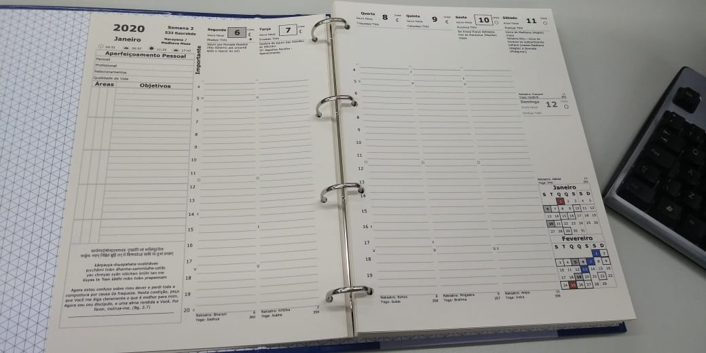
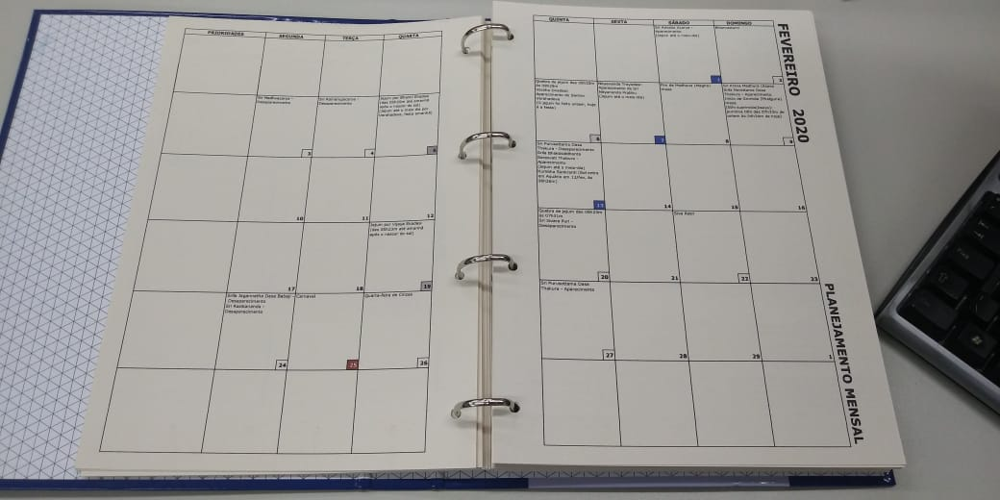
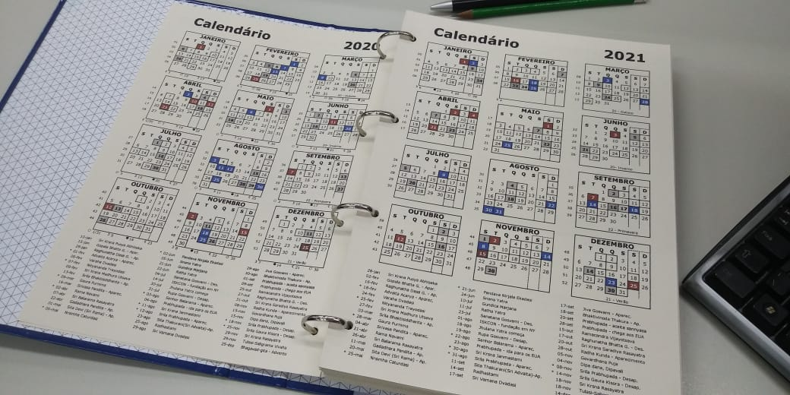

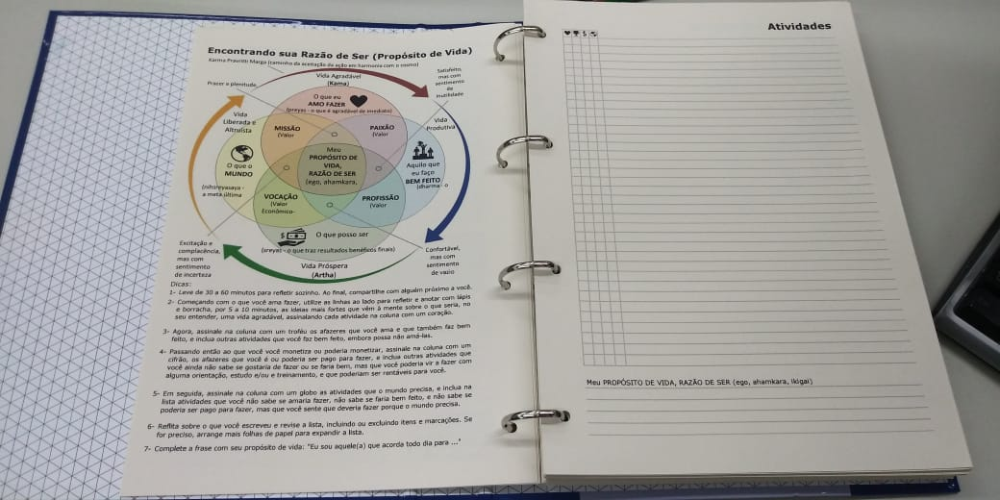
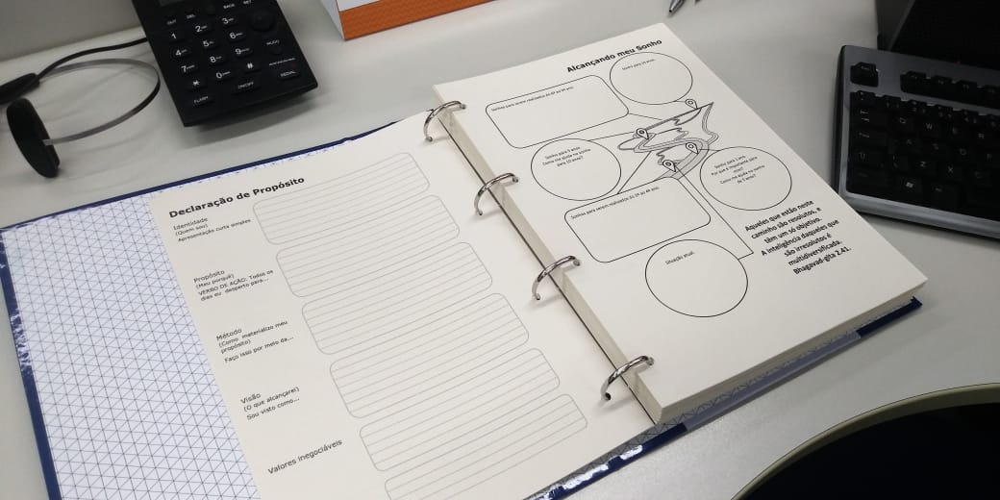
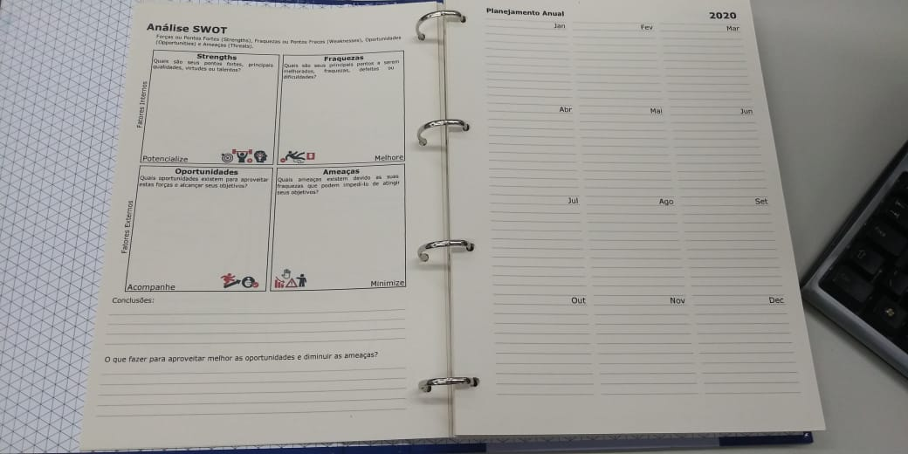
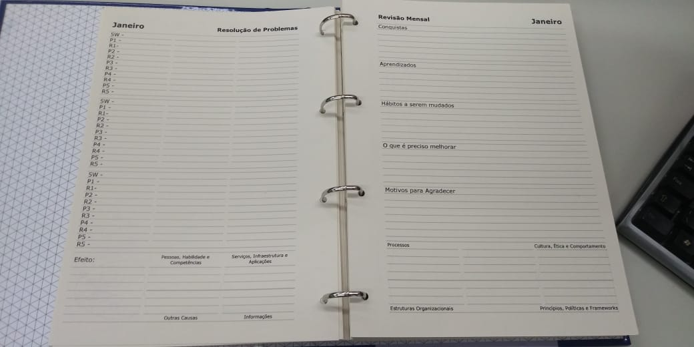
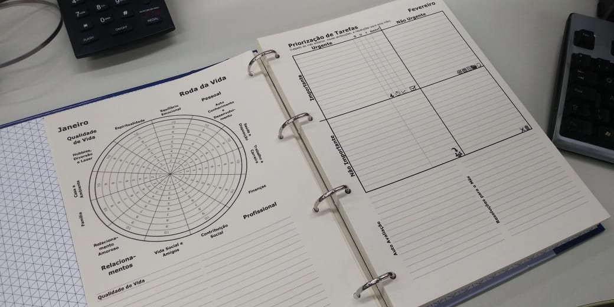
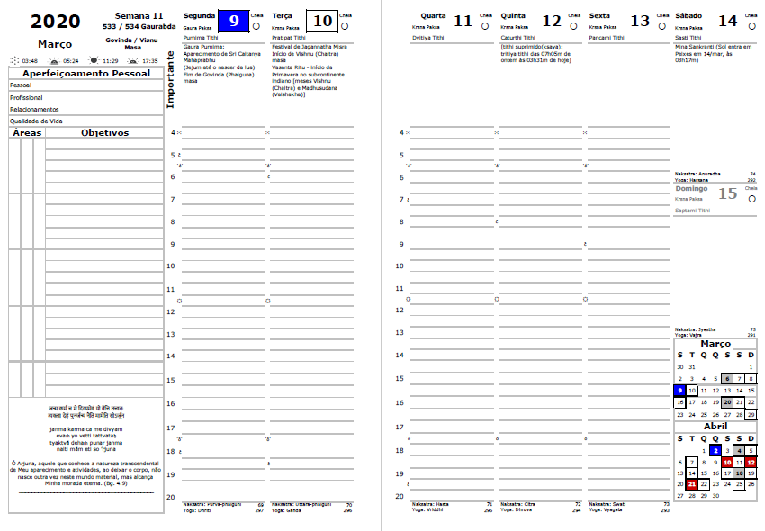
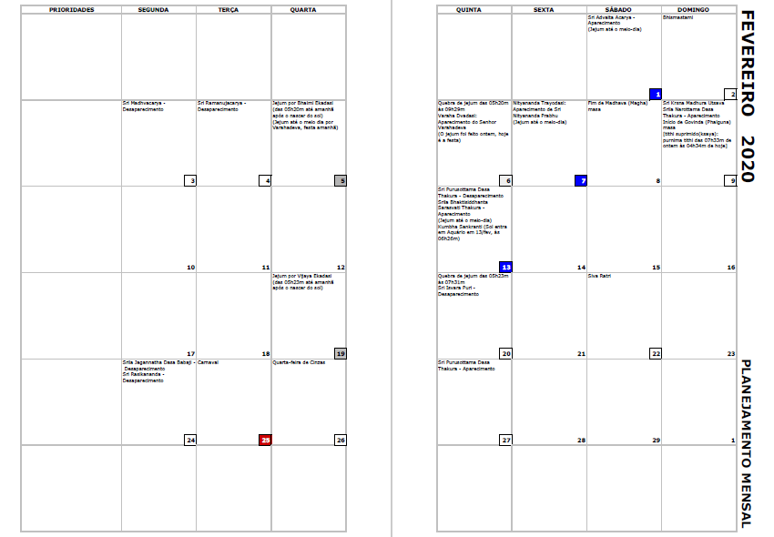
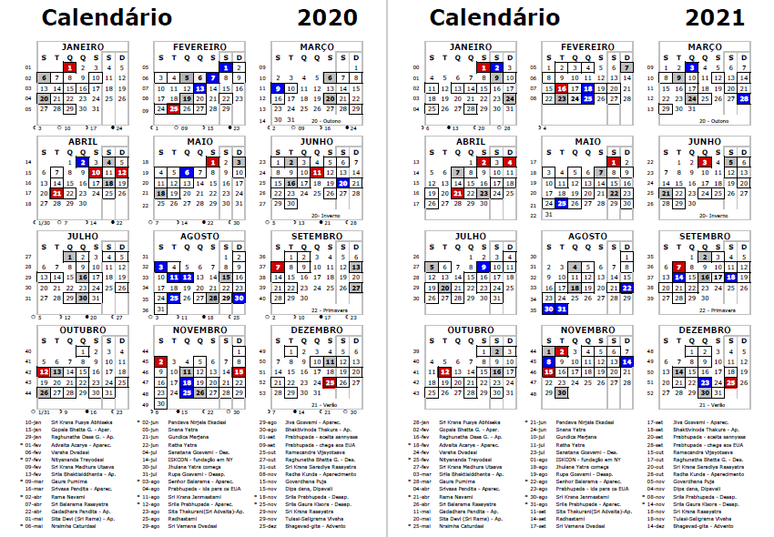